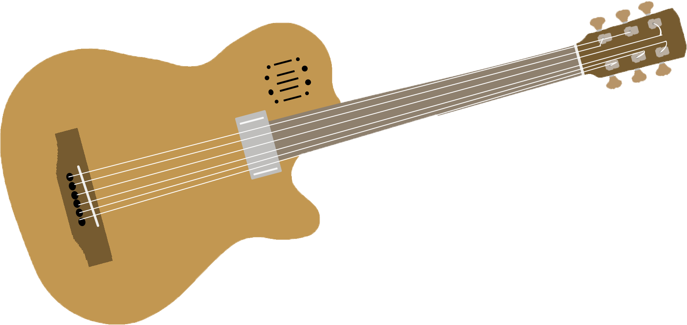

Види гітар

Класична гітара
Класична гітара — основний представник сімейства гітар, щипковий струнний музичний інструмент басового, тенорового і сопранового регістрів. Особливості:
-
Звук посилюється лише дерев'яним корпусом гітари.
-
Використовуються струни з синтетики: нейлону, рідше — карбону. У дуже рідкісних випадках — струни з кишок тварин (жильні струни).
-
Гриф гітари більш широкий — становить 53 мм, що, з одного боку, дозволяє легше притиснути потрібну ноту, але, з іншого боку, вимагає великих зусиль при грі
-
Струни зазвичай перебирають пальцями.
-
Мітки ладів на грифі розташовані збоку, а не на площині грифа. Це відповідає стриманому дизайну гітари.
-
У класичних гітар між головкою грифа і корпусом гітари розташовані тільки 12 ладів.
-
Зазвичай класичні гітари роблять без пластмасової пластинки (гольпеадора) під струнами.
Акустична гітара

Акустична гітара — струнний щипковий музичний інструмент з сімейства гітар, звучання якого здійснюється завдяки коливанню струн, яке посилюється внаслідок резонування порожнистого корпусу. Сучасні акустичні гітари можуть мати вбудовані звукознімачі: магнітні або п'єзоелектричні, з еквалайзером і регулятором гучності.
Пів-акустична гітара
Гітари, мають деякі особливості як акустичної гітари, так і електрогітари. Такі гітари стали першими електрогітарами, на які вперше стали встановлювати електромагнітні звукознімачі. Згодом стали випускатися електрогітари з цільним корпусом, хоча напівакустичні гітари досі є популярними серед музикантів. За своєю конструкцією півакустичні гітари бувають двох видів: з порожнистим і пів-порожнистим корпусом. Півакустичні гітари з порожнистим корпусом аналогічні за конструкцією акустичним гітарам і не вимагають підключення до підсилювача звуку. Гітари з напів-порожнистим корпусом мають центральну цільнокорпусну частину і порожнисті вставки з боків.
Електроакустична гітара
Електроакустична гітара — струнний музичний інструмент, схожий на класичну та акустичну гітару, який відтворює звуки цих гітар. Відрізняється тим, що має попередній підсилювач, як і бас- та електрогітари. Електронний датчик знаходиться під струнами та перетворює механічні коливання струн в електричні імпульси, які й посилаються до підсилювача. Електроакустична гітара складається з таких самих частин, як і акустична. Але, окрім того, ще має звукознімач, передпосилювач і вихід для підключення гітари (найчастіше, XLR-роз'єм). Такі гітари користуються популярністю і використовуються тоді, коли звуку звичайної акустичної гітари недостатньо.
Електрогітара
Електрогітара — електричний музичний інструмент, різновид гітари з електричними звукознімачами, що перетворюють коливання металевих струн на коливання електричного струму. Сигнал зі звукознімачів може бути оброблений для отримання різних звукових ефектів та підсилений для відтворення через динаміки. Слово «електрогітара» виникло від словосполучення «електрична гітара».